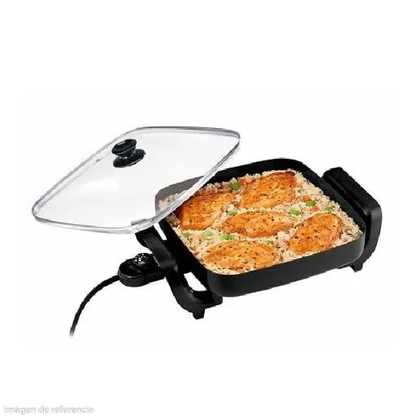
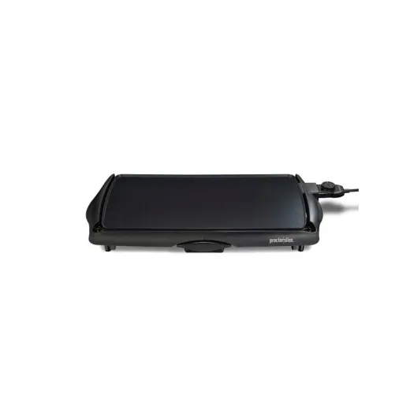
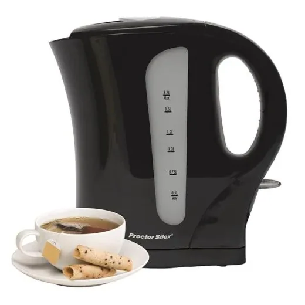

Inicio › Pequeños electrodomésticos

Proctor Silex
Sartén Eléctrico Proctor Silex 38526 5 lbs Negro con Tapadera de Vidrio y Control de Temperatura
L 1,295
En Lady Lee
Precio en cada tienda
| Tienda | Precio | Antes | Disponibilidad | |
|---|---|---|---|---|
| Lady Lee | L 1,295 | — | Disponible | Ver en tienda › |
Precios referenciales tomados de cada tienda el 28 de noviembre de 2026. El precio válido es el que muestra la tienda al comprar.
Historial de precio
Lo seguimos desde el 13 de noviembre. Precio más bajo registrado: L 1,295 en Lady Lee (13 de noviembre), igual que hoy. El precio no ha cambiado en ese tiempo.
Características
| Marca | Proctor Silex |
|---|---|
| Modelo | 38526 |
| Referencia | 38526 |
| Categoría | Sartén eléctrico |
| Color | Negro |
Descripción
Sartén Eléctrico Proctor Silex 38526, práctico y versátil para tu cocina. Ofrece todos los beneficios de una sartén tradicional sin necesidad de encender la estufa. Se calienta rápidamente y su superficie de cocción de 144 pulgadas cuadradas distribuye el calor de manera uniforme, ajustándose hasta 400 °F. Con asas frías al tacto y tapa de vidrio, es seguro y fácil de usar. Además, tanto la sartén como la tapa son aptas para lavavajillas, lo que facilita la limpieza.
Superficie de cocción: 144 pulgadas cuadradas.
Calor ajustable: hasta 400 °F.
Tapadera de vidrio: permite ver los alimentos mientras se cocinan.
Asas frías al tacto: mayor seguridad al manipular.
Fácil limpieza: sartén y tapa aptas para lavavajillas.
Uso versátil: ideal para freír, saltear y cocinar sin estufa.
Su
Otros pequeños electrodomésticos Proctor Silex
 Arrocera y Vaporera 30 Tazas 37516 HamilL 1,190En Diunsa
Arrocera y Vaporera 30 Tazas 37516 HamilL 1,190En Diunsa Horno Tostador Proctor Silex 31122L 1,495En Gallo más Gallo
Horno Tostador Proctor Silex 31122L 1,495En Gallo más Gallo
Parrilla Electrica Proctor Silex 38513PL 1,090En Diunsa Arrocera y Vaporera 16 Tazas 37527 HamilL 790En Diunsa
Arrocera y Vaporera 16 Tazas 37527 HamilL 790En Diunsa Plancha a Vapor 17515 Proctor SilexL 690En Diunsa
Plancha a Vapor 17515 Proctor SilexL 690En Diunsa
Hervidor Electrico 1.7LTS NegroL 675En Lady Lee Arrocera 10TZ Proctor Silex Blanco 37533L 629En Diunsa
Arrocera 10TZ Proctor Silex Blanco 37533L 629En Diunsa Plancha a Vapor Suela Antiadherente · 17201 SencillaL 494.99En Lady Lee
Plancha a Vapor Suela Antiadherente · 17201 SencillaL 494.99En Lady Lee